Esta es una sola imagen de ejemplo. El personaje está formado por muchas imágenes que, al mostrarse en orden y en un tiempo determinado, generan la sensación de movimiento.
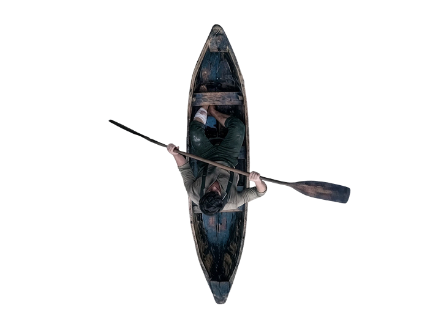
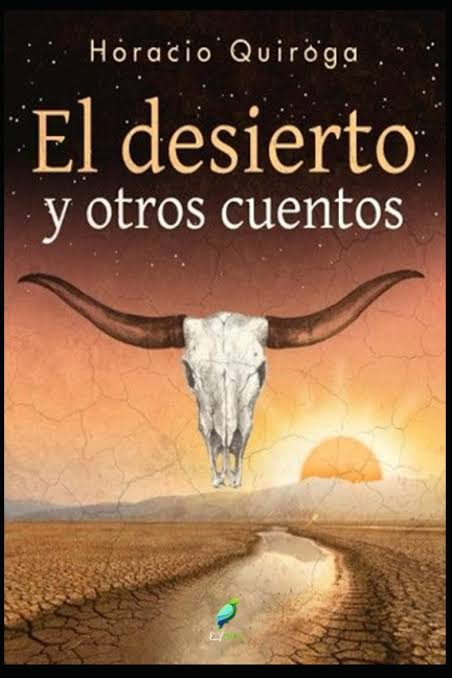
El cuento «El desierto», publicado en 1923, narra la vida aislada en la selva misionera de Subercasaux y sus dos hijos pequeños, Brunito y Tita. Lejos de la ciudad, los tres deben arreglárselas por sí mismos en un entorno donde la naturaleza marca el ritmo de cada día. La tranquilidad de su vida se quiebra cuando Subercasaux enferma de repente y ya no puede cuidar de sus hijos como antes. La historia muestra la preocupación de los niños y los esfuerzos del padre por protegerlos, mientras explora el amor familiar y la vulnerabilidad humana frente a una naturaleza hostil.
(1878–1937) fue un escritor uruguayo, reconocido por sus cuentos ambientados en la selva y por explorar la relación entre las personas y la naturaleza.
Dividimos el cuento en sus momentos más importantes y los fuimos narrando, identificando en cuáles se podían tomar distintas decisiones. Al comienzo, por ejemplo, Subercasaux sale y regresa en el cuento; en nuestra aventura decidimos que el jugador pudiera elegir entre salir o quedarse. Decidimos retratar cada parte del cuento con fotografías y textos que fuimos creando para acompañar la narración.
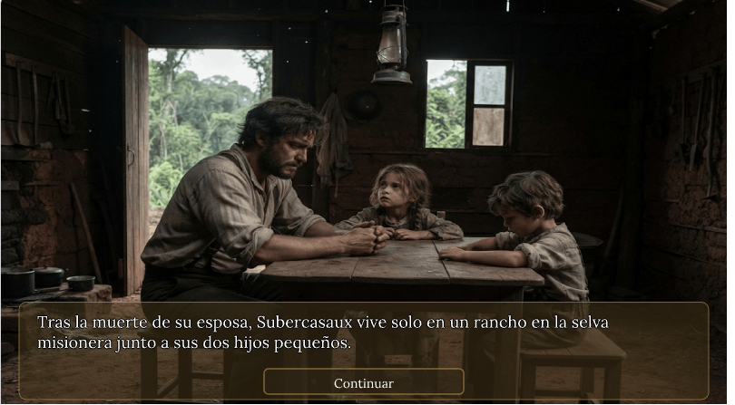
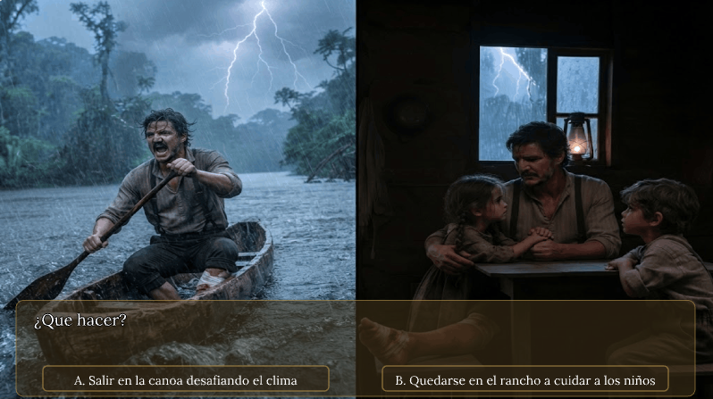
Para hacer la aventura más inmersiva, agregamos sonidos y música. Además, la historia tiene cuatro finales diferentes.
Hicimos un juego interactivo en el que caen piedras por un río, al que decidimos llamar «Subercasaux en el río». Esta parte ocurre después de la decisión de que Subercasaux salga al río para buscar ayuda.
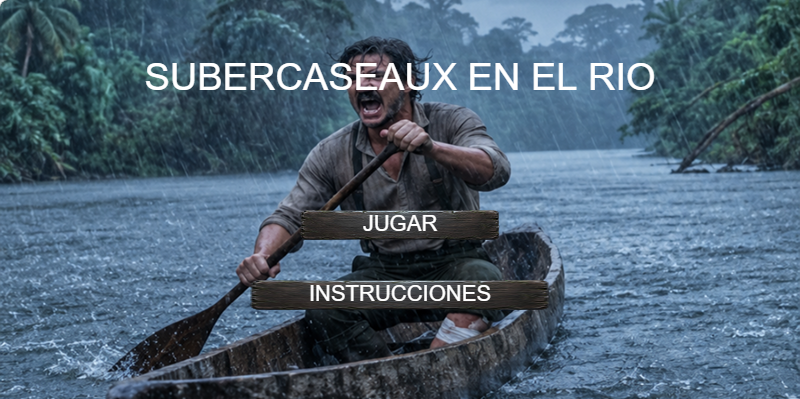
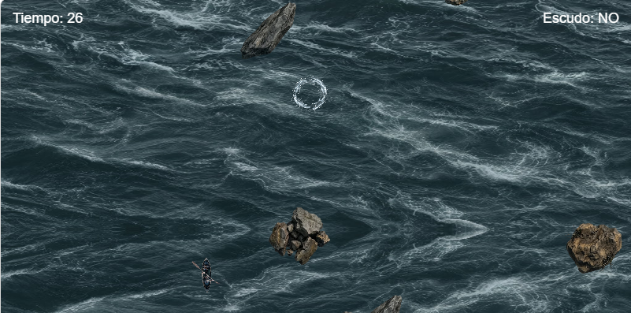
Todo el segundo trabajo fue desarrollado con sprites creados por nosotros mismos: el personaje principal, las rocas, los elementos de la interfaz de usuario (UI) y los escudos.
Esta es una sola imagen de ejemplo. El personaje está formado por muchas imágenes que, al mostrarse en orden y en un tiempo determinado, generan la sensación de movimiento.

El escudo se recoge mientras se avanza por el río. Estas tres imágenes, al mostrarse rápidamente una tras otra cuando lo tienes puesto, parecen una animación.
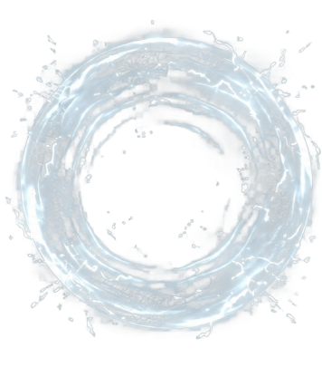
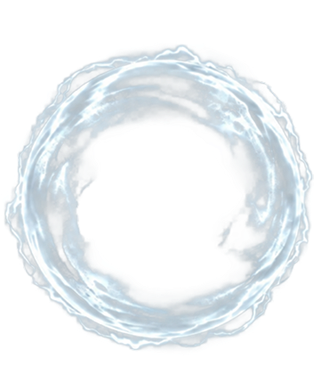
Los botones aparecen por todo el juego y nos sirven para marcar los pasos entre las distintas pantallas.
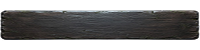
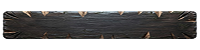
Estas son las rocas que pueden aparecer en el juego. Van saliendo en distintos momentos mientras avanzas por el río.
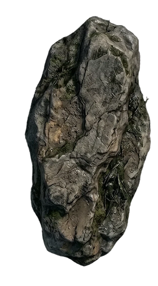
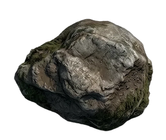
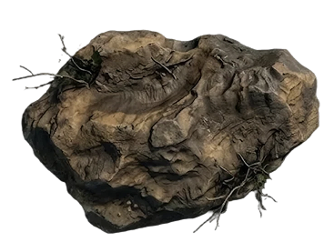
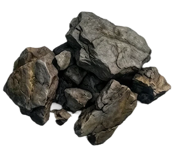
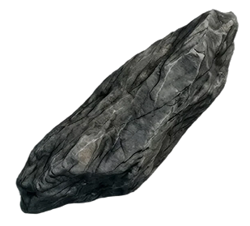